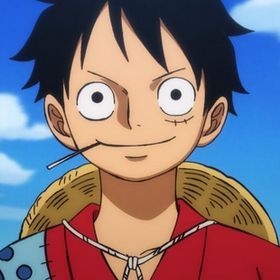
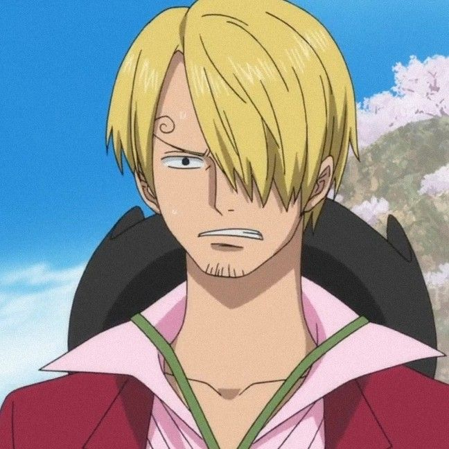

LUFFY
Luffy is usually recognizable by his straw hat, a gift from "Red-Haired" Shanks. In his early childhood, he wears a white shirt and blue shorts. The character has a scar under his left eye from stabbing himself to demonstrate his courage to Shanks and his crew.
ZORO

Zoro is a relatively tall man with a muscular physique and light tanned skin. He has his distinctive spiky green hair, which Sanji ridicules him for by calling him "Moss Head". He has a stitched scar on his chest which he got from his first duel with Dracule Mihawk.
NAMI

Nami is a slim young woman of average height with orange hair and brown eyes. Many characters seem to consider her to be an attractive woman.
SANJI
Sanji is a tall, slender man who commonly wears a black suit and smokes a cigarette. Before the timeskip, Sanji is seen with his blonde hair covering his left eye. However, after the timeskip, his hair covers his right eye.
USOPP

"God" Usopp is the sniper of the Straw Hat Pirates and one of the Senior Officers of the Straw Hat Grand Fleet. He is the fourth member of the crew and the third to join, doing so at the end of the Syrup Village Arc. Although he left the crew during the Water 7 Arc, he rejoined at the end of the Post-Enies Lobby Arc.
CHOPPER

Tony Tony Chopper is a half-reindeer, half-human hybrid who gained this ability after eating the Hito Hito no Mi or the Human-Human Fruit, which allows him to be able to walk and talk like a human. He is also able to transform into different forms that are suitable for battle situations.
ROBIN

Nico Robin, also known by her epithet "Devil Child" and the "Light of the Revolution", is the archaeologist of the Straw Hat Pirates and one of the Senior Officers of the Straw Hat Grand Fleet. She is the seventh member of the crew and the sixth to join, doing so at the end of the Arabasta Arc.
FRANKY

"Cutty Flam", better known by his nickname Franky, is one of the main characters in the One Piece franchise. He is the shipwright of the Straw Hat Pirates. He is a 36-year-old cyborg from Water 7 and was introduced as the leader of the Franky Family, a group of ship dismantlers.
BROOK

Brook is an extremely tall skeleton dressed in formal attire complete with top hat and cane. Standing at 266 cm (8'8½") in height, he is the second tallest member of the Straw Hat crew, having been edged out by Jinbe. Despite having no skin, he still has an afro which he says is because his hair has very strong roots.
JINBEI

"Knight of the Sea" Jinbe is the helmsman of the Straw Hat Pirates and one of the Senior Officers of the Straw Hat Grand Fleet. He is the tenth member of the crew and the ninth to join, doing so during the Wano Country Arc. Jinbe is a whale shark fish-man and a powerful master of Fish-Man Karate.
BACK TO HOMEPAGE